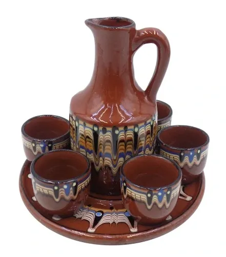
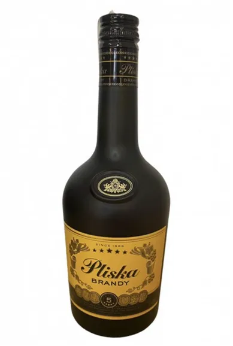
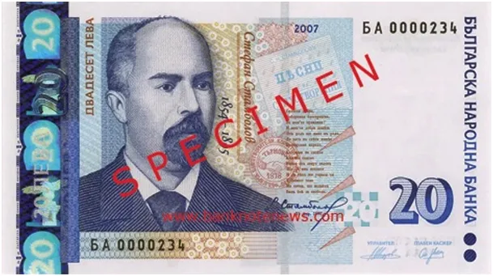
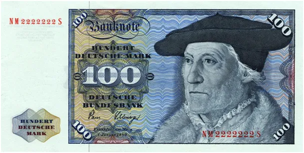

O tym jak Bułgarzy przyjęli Euro w roku 1999, zanim jeszcze euro trafiło do obiegu.
Czytamy o protestach przed wprowadzeniem w Bułgarii Euro w przyszłym roku. Cały ten "pogrzeb" jest na nic, bo Bułgarzy mają już u siebie Euro od ćwierć wieku.

Bułgaria to kraj bardzo pokrzywdzony w ostatnim stuleciu, uwolniony od Imperium Osmańskiego (Turcji) po rozpadzie tego drugiego szybko trafił jako łup wojenny do imperium sowieckiego. Z racji bliskości kulturowej i religijnej sowieci zaprawieni już w bojach
na Rosjanach bardzo szybko i głęboko unicestwili tradycyjną kulturę bułgarską. W okresie transformacji z Bułgarii wyjechało bardzo wiele osób i to zarówno do Europy jak i do Azji. Wskaźniki demograficzne były przez dekady nawet gorsze niż w Polsce. Kraj jest skorumpowany a kondycja ludności jest kiepska.

Po okresie wielkiej inflacji w latach 90' nowa bułgarska waluta "lew" została na stałe związana z niemiecką marką jak 1:1, a gdy markę zastąpiło euro dokonano automatycznej podmiany. Od tego momentu Bułgaria utraciła możliwość jaką daje własna waluta, która może być słabsza lub silniejsza do innych walut. Osłabianie własnej waluty wpływa na bilans eksportu itp. Mając swoją walutę można elastycznie reagować na zmiany na rynkach.

Podczas pobytu w Bułgarii zorientowałem się, że większość Bułgarów nie zdaje sobie sprawy z tej sytuacji, ponieważ w obiegu są bułgarskie lewy i ciężko zarobione na emigracji euro trzeba wymienić w banku. Nikt się nie zastanawia dlaczego od 23 lat kurs wymiany jest stały i wynosi 1 EUR = 1,95583 BGN.
Bułgarzy i mają swoją walutę i jej nie mają, tak więc mogą sobie protestować do woli, bo to tak samo jakby nie protestowali.
Paweł Klimczewski